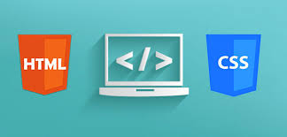

Project 1
The first project is related to develop a single Web page using
only two technologies: HTML and CSS. The project consists in
creating a single web page with a menu at the top know as
Navigation Bar. We have to include text describing ourself and
text describing the project. Additionally, we need to include
two images: one image is of ourself and second image is anything
related to the project itself.

Project 2
During my freshman year of college, I built a task manager application in
Java with a graphical user interface (GUI) using JavaFX. The program allowed
users to create, edit, and delete tasks while assigning due dates and priority levels.
I implemented an ArrayList to store tasks and used serialization to save and load data,
so tasks would persist between sessions. To improve usability, I added sorting and
filtering features, letting users view tasks by priority or upcoming deadlines.
This project helped me develop a better understanding of object-oriented programming,
event-driven design, and basic file handling in Java. It was a great hands-on learning
experience that reinforced my skills in GUI development and data management.